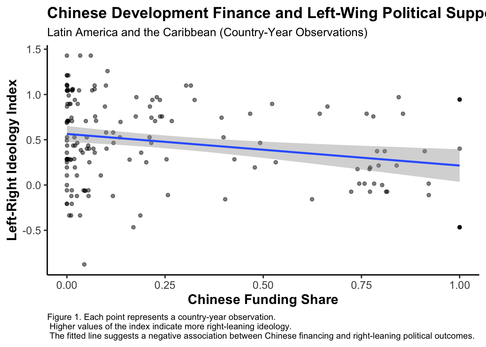

FINAL PAPER
Influence or Illusion? Chinese Development Finance and Political Outcomes in Latin America
Introduction
Between the 2000-2021 period China allocated over $1.34 trillion across 165 middle and low income countries to finance over 20000 development projects. Latin America has been one of the regions that has witnessed increased Chinese interest to grow their portfolio through different infrastructure projects such as ports, railways, and energy generation. The increased Chinese interest in Latin America has raised concerns about its economic and political implications. For some analysts and policymakers, China’s development finance strategy in Latin America and the Caribbean reflects an attempt to lock in Chinese influence and secure access to essential resources, as well as hindering US hegemony in LAC (Ziemer 2026).
Development finance and international capital allocation is intricately linked with ideological and geopolitical factors. Kempf et al. quantified how loan volume and size changed as ideological alignment with the US shifted, finding a negative correlation between US loan size and ideological distance. This paper found that when a US bank experienced increased ideological distance from a country after elections, it reduced its lending volume by 22% and number of loans by 10% (Kempf et al. 2023). US institutional investors are more likely to allocate capital when a foreign country is US aligned, both on economic and social issues.
Historically, this mechanism has impacted Latin American domestic politics, as LAC governments had an incentive to comply with US foreign policy, in order to reap the benefits of development finance. In addition, US led international institutions such as the IMF have been well known for their conditionality: in return for financial assistance, governments had to comply with policy changes that align with a market economy such as trade liberalization, privatization of state-owned enterprises and deregulation of markets (Dreher, Sturm, and Vreeland 2015). Prior to China’s political strengthening, with no alternative creditors, adhering to Western conditionalities was the only option.
But, the global power balance has been shifting in the past years . With China strengthening and investing more in initiatives such as the Belt and Road Initiative (BRI) that speak to low and middle income countries; and, with the United States shifting its foreign policy towards an “America First” perspective, Latin America has had the opportunity to re-align (Estefan 2025).
Chinese development finance represents an alternative for LACs to diversify their borrowing strategies. Past scholarship has sought to understand the supply and demand factors of this new kind of borrowing. Scholars like Albright have found that LACs see Chinese development finance as a compelling alternative to the US, economies like Ecuador purposely have chosen Chinese loans as a way to reduce dependency on the US (Albright 2025).
Chinese loans are known to be larger, which is attractive for LACs, especially when thinking about infrastructure projects. But most importantly, Chinese loans are known because of their “no strings attached” policy, which differs greatly from the West. As LACs find an opportunity to distance themselves from the US, and find themselves less indebted to the West, politicians have the opportunity to target broader agendas.
Throughout the 1980s, the United States had significant financial and political presence in Latin America, but in the late 90s, the region saw a wave of left-wing victories. At the same time, Chinese development finance was accelerated in the late 90s with the establishment of the Chinese Development Bank in 1994 (Gallagher and Myers 2017). In the late 2010s, a second wave of leftist governments emerged in the region with the election of leaders such as Gabriel Boric in Chile, the return of Lula in Brazil and Andres Manuel Lopez Obrador in Mexico (Encyclopaedia Britannica 2025). Similarly, Chinese development finance saw a massive increase post 2008 and launched the Belt and Road Initiative in 2013.
Past literature already establishes and quantifies the relationship between capital allocation and political ideology. This paper seeks to take that a step further and asks whether Chinese development finance has enabled ideological party shifts in Latin America by loosening domestic political constraints imposed by the US.
Hypothesis: Higher levels of Chinese development finance in Latin American countries will shift domestic politics leftward.
This hypothesis is grounded on past political economy literature. Additionally it takes past scholarship on the demand and supply of development finance loans as a starting point. Knowing that Chinese financing is characterized by fewer political constraints, it is reasonable to expect that an increase in Chinese development finance will increase left wing party support in LACs. Moreover, when less reliant on the US, politicians can feel emboldened to criticize the US hegemony and seek divestment from it through a closer alignment with Chinese values. As a result, increased access to Chinese financing may strengthen the appeal and success of left wing presidential candidates that advocate for independence from the US agenda.
Data and Research Design
This study will use a two-way fixed effects regression model to compare the impact of Chinese development finance on V-Dem’s left-right index (cite) within each Latin American country from 2000 to 2021. Country fixed effects control for time-invariant factors such as geography, historical political orientation, and institutional factors, while the year fixed effects control for trends affecting all countries. The regression will also control for confounding variables that could affect both the likelihood of receiving Chinese financing and an increase in left-wing party support, for example GDP per capita.
\[ LeftRightIndex_{it} = \beta_1 \cdot chinese\ funding\ ratio + \beta_2 \cdot GDP_{it} + \alpha_i + \gamma_t + \epsilon_{it} \]
\[ AntiElitismIndex_{it} = \beta_1 \cdot chinese \ funding\ ratio + \beta_2 \cdot GDP_{it} + \alpha_i + \gamma_t + \epsilon_{it} \]
The independent variable for this paper is the share of Chinese development finance to Western development finance. I chose to work with this ratio instead of the raw amount of Chinese funding because this paper focuses on relative influence from these two spheres on Latin American domestic politics. The ratio measures the balance of power, an increase in this ratio can predict a Latin American country potentially shifting its political alignment. The raw number with the Chinese aid amount is not very telling of how much China is out competing the US in terms of influence, it only shows Chinese presence.
Data on Chinese development finance was retrieved from AidData 3.0, which contains information on worldwide development projects funded by China (AidData 2023). This database documents over 20,985 projects across 165 low and middle income countries totaling $1.34 trillion. On the other hand, data on Western funding was retrieved from the OECD Creditor Reporting System, which covers bilateral aid from all rich countries and major Western development banks (Organisation for Economic Co-operation and Development 2026). Both the AidData 3.0 and the CRS data were filtered to cover only the Latin American and the Caribbean, and were aggregated at the country-year level for the 2000-2021 period, to match what was available for Chinese development finance. In addition, the monetary value of commitment was adjusted in all datasets to be in 2021 dollars using CPI data from the Federal Reserve.
In order to have a reliable independent variable that took into account Chinese influence and not just Chinese presence, I constructed a new variable that calculated the share of Chinese funding of the total received Western and Chinese funding. For this process, I merged the AidData 3.0 dataset with the dataset from the CRS, adjusting all quantities to 2021 US dollars and ensuring everything was in the same scale. The share I created by dividing the amount of Chinese funding in a given year by the total amount of funding received by a country, which included Western funding.
The dependent variable is the country-level ideological position. Data on party position and electoral outcomes was retrieved from the V-Party dataset. The V-Party dataset was produced by the V-Dem institute and tracks shifts and trends in political parties since 1970 across the world. It contains expert coded measures of party ideology such as populism, anti-elitism, prioritization of minority rights and more. The dataset has been narrowed down to the 2000-2021 period and the Latin American countries, in order to match the information for Chinese financing.
To create the country-level ideological position variable, I selected anti-elitism and economic left-right wing scale to track how left wing the analyzed party is. According to the V-Party codebook, a higher number for the anti-elitism variable means that anti-elite rhetoric is more important for the given party. On the other hand, the higher the left-right index, the more right wing the party is. I considered the anti-elitism variable to be a good indicator of party ideology because of previous literature that identifies left wing parties as more prone to make statements against the elite. Knowing from previous research that borrowing decisions from China often contain an ideological component that seeks to diversify from the US imperialist agenda, it also seems reasonable to trust the anti-elitism variable to be an accurate predictor of left-right lean. Moreover, the economic left-right wing variable is the best to objectively measure the political orientation of each party, where parties with a lower number are considered more left leaning.
The first challenge I found with this data set was that it only contained information for election years in each country. Because I wanted to have more observations, for every year of Chinese funding, I completed the missing years with the values from the previous election year. This made sense, since for the duration of a given party in power, their right/left lean will remain the same. This allowed me to go from only 123 observations across all LACs to 532 observations.
Additionally, the datasets had a different unit of analysis. While the AidData 3.0 dataset had country-year for each observation, the V-Party dataset had party-country-year for each observation. In order to be able to use both datasets together, I had to modify the unit of analysis in the V-Party dataset so I could have it as a country-year too. To calculate the ideological orientation of each country each election year, I grouped by country and calculated the weighted mean of the left-right ideology score as well as the anti-elitism variable. The decision to calculate a weighted mean was to accurately account for the fact that not all parties within every country are equally relevant. The weighted mean gives a more accurate depiction of the ideological anchor of the countries each given year. Both datasets were merged by country and year. The OECD dataset had less observations, so I reduced the sample to the 11 Latin American countries for which I had all the available information.
A key limitation of this model is reverse causality. Countries that are already left leaning tend to receive more funding from China, and none from the US. For example, two extreme cases like Cuba and Venezuela did not receive any funding from the US but this was because of pre-existing conditions that confound the relationship between ideology and development finance. Fixed effects are a good way to get around this, since they absorb the fact that countries like Cuba were always left leaning. Fixed effects allow me to compare each country against itself over time, which partially removes biases. However, fixed effects do not solve the endogeneity problem completely. For example, China might strategically choose countries that were already moving leftwards. Other factors inside LACs could cause governments to move leftward and China to choose them as lenders, such as the rise of populism, anti-US sentiment or institutional instability. The fixed effects model can’t account for changing political trends within countries over time, only absorb time invariant characteristics.
In addition, other confounding variables such as GDP and aspects of the macroeconomic structure of LACs confound the relationship: China would be investing in these countries because of the attractiveness of these factors and at the same time, these factors can impact ideology.
To address these limitations, I conduct two additional regressions using a one year lead of Chinese monetary commitment and unemployment rates in LACs. The first regression reverses the relationship, testing whether the left-right index can predict future Chinese financing. This checks whether countries were already shifting leftward on their own before Chinese funding arrived. The second regression looks at the relationship between unemployment rates and Chinese financing. If the relationship between Chinese financing and LACs were driven by economic conditions, it would be reasonable to expect a change in the unemployment rate as Chinese funding increases.
Results
Fixed Effects Regression: Impact of Chinese Development Finance on Country Ideological Position
| Left-Right Ideology | Anti-Elitism | |
|---|---|---|
| * p < 0.05, ** p < 0.01, *** p < 0.001 | ||
| Standard errors in parentheses. | ||
| All models include country and year fixed effects. | ||
| Chinese Funding Share | 0.011 | 0.223*** |
| (0.019) | (0.027) | |
| GDP Per Capita (Log) | 0.000 | -0.000 |
| (0.014) | (0.020) | |
| Num.Obs. | 3652 | 3652 |
| R2 | 0.622 | 0.787 |
| R2 Adj. | 0.618 | 0.785 |
The regression looks at the relationship between Chinese development finance and a LAC’s ideological position. Chinese development finance does not appear to significantly predict movement along the left-right scale. However, higher levels of Chinese financing are associated with significantly higher levels of anti-elitist rhetoric, suggesting that Chinese engagement may correlate more strongly with populist political discourse than with left-right changes.
However, these models are not enough to define the relationship between Chinese development finance and ideological shifts as causal. It is possible that China strategically chooses countries that already exhibit trends that align with their values, such as higher levels of populism or pre-existing shifts towards the left. In order to address this, I performed two regressions to address this reverse causality problem.
Empirical Extension
A regression that studies the relationship between left-right ideology and Chinese financing addresses the problem of reverse causality. This regression seeks to understand whether more left-leaning countries attracted more Chinese funding. In addition, I created another regression to explore whether Chinese financing is also driven by macroeconomic conditions by choosing to quantify the relationship between unemployment rates and Chinese development finance. If the relationship between Chinese financing and LACs were driven by economic conditions, it would be reasonable to expect a change in the unemployment rate as the share of Chinese funding increases. In a similar regression with country and year fixed effects, I aimed to find the relationship between Chinese funding and unemployment rates.
\[ChineseShare_{it} = \beta_1 LeftRightIndex_{it} + \beta_2 GDP_{it} + \alpha_i + \gamma_t + \epsilon_{it} \]
\[ UnemploymentRate_{it} = \beta_1 ChineseShare_{it} + \beta_2 GDP_{it} + \alpha_i + \gamma_t + \epsilon_{it} \]
| Left-Right Ideology | Anti-Elitist Rhetoric | Unemployment Rate | |
|---|---|---|---|
| Chinese Funding Share | 0.011 | 0.223*** | -0.016 |
| (0.019) | (0.027) | (0.633) | |
| GDP Per Capita (Log) | 0.000 | -0.000 | 0.000 |
| (0.014) | (0.020) | (0.000) | |
| Num.Obs. | 3652 | 3652 | 3696 |
| R2 | 0.622 | 0.787 | 0.842 |
| R2 Adj. | 0.618 | 0.785 | 0.841 |
| + p < 0.1, * p < 0.05, ** p < 0.01, *** p < 0.001 | |||
| Standard errors clustered at the country level. | |||
| All models include country and year fixed effects. | |||
| Significance levels: * p < 0.05, ** p < 0.01, *** p < 0.001 | |||
If Chinese funds were simply flowing towards already left-leaning countries, we would expect left-right ideology to predict an increase in Chinese funding. However, the relationship is statistically significant in both models.The third regression does not provide any robust evidence that Chinese funding is driven by macroeconomic factors. This indicates that the initial hypothesis was partially supported: increased levels of Chinese funding are associated with higher levels of populist and anti-elitist rhetoric in Latin American countries, though not necessarily with shifts in traditional left-right ideological alignment.
Discussion and Policy Implications
The final results of this project suggest that an increase Chinese development finance does not drive significant shifts in traditional left-right lean in LACs. However, it does encourage and increase anti-elitist and populist rhetoric. This increase in anti-elitist and populist rhetoric may contribute to distance between Latin America and the US, which is also supported by past literature that explores the impact of Western conditionality in development finance.
With rising concerns about the Chinese political and economic threat, understanding the impact of increased Chinese financial influence in the region should be top priority. Whether Latin American countries choose to bandwagon with the new power or balance against it by siding with the United States will be a key determinant of what the future world order will look like. Development finance is a powerful way of tracking how soft power tools can reshape the international system, and understand what happens as Latin America shifts into closer alignment with China.
References
AidData. 2023. “Global Chinese Development Finance Dataset.” https://www.aiddata.org.
Albright, Zara C. 2025. “The Political and Pragmatic Determinants of Chinese Development Finance in Latin America.” Latin American Politics and Society.
Dreher, Axel, Jan-Egbert Sturm, and James Raymond Vreeland. 2015. “Politics and IMF Conditionality.” Journal of Conflict Resolution 59 (1): 120–48. http://www.jstor.org/stable/24546221.
Encyclopaedia Britannica. 2025. “What Was the Pink Tide in Latin America?” https://www.britannica.com/event/What-Was-the-Pink-Tide-in-Latin-America.
Estefan, Brenda. 2025. “How Latin America Is Realigning.” Americas Quarterly, October. https://www.americasquarterly.org/article/how-latin-america-is-realigning/.
Gallagher, Kevin P., and Margaret Myers. 2017. “China-Latin America Finance Database.” Brookings Institution. https://www.brookings.edu/wp-content/uploads/2017/11/fp_20171109_china_development_finance.pdf.
Kempf, Elisabeth, Mancy Luo, Larissa Schäfer, and Margarita Tsoutsoura. 2023. “Political Ideology and International Capital Allocation.” Journal of Financial Economics 148: 150–73.
Organisation for Economic Co-operation and Development. 2026. “Creditor Reporting System on Aid Activities.” https://www.oecd.org/en/publications/serials/creditor-reporting-system-on-aid-activities_g1gha57a.html.
Ziemer, Henry. 2026. “China’s Expanding Interests in Latin America: Development, Leverage, Coercion, and Crime.” Center for Strategic; International Studies (CSIS). https://www.csis.org/analysis/chinas-expanding-interests-latin-america-development-leverage-coercion-and-crime.